Moduler for den som går sin egen vei. Gull ut, hvitt inn.
Modules for those who walk their own path. Gold out, white in.

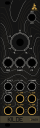
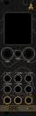
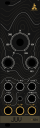
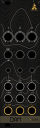
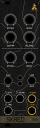
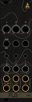
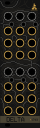
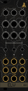
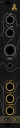
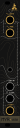
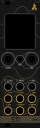
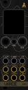
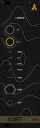
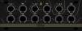
Fra terrengetFrom the terrain
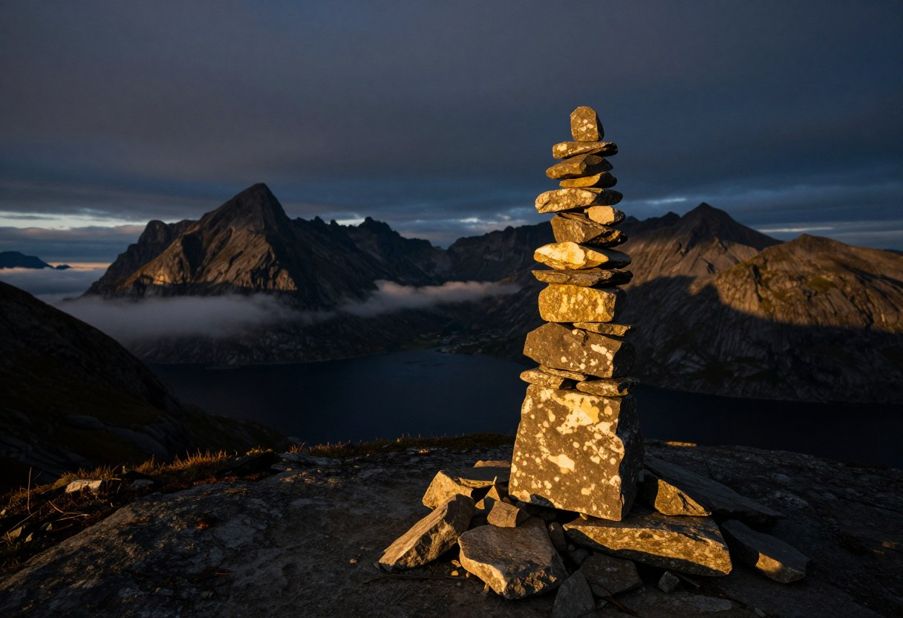
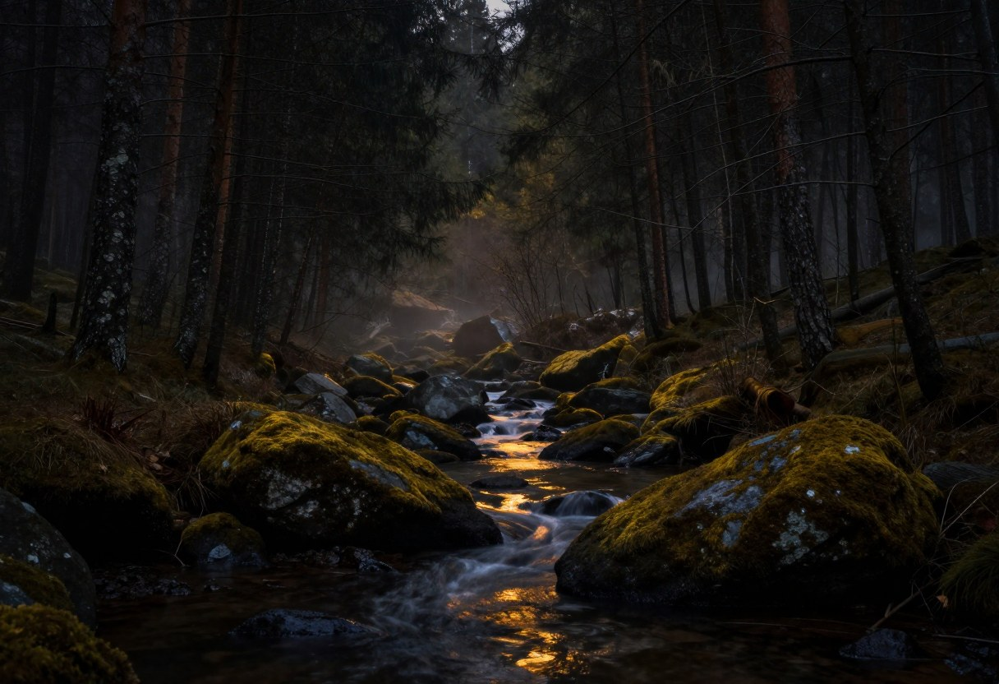
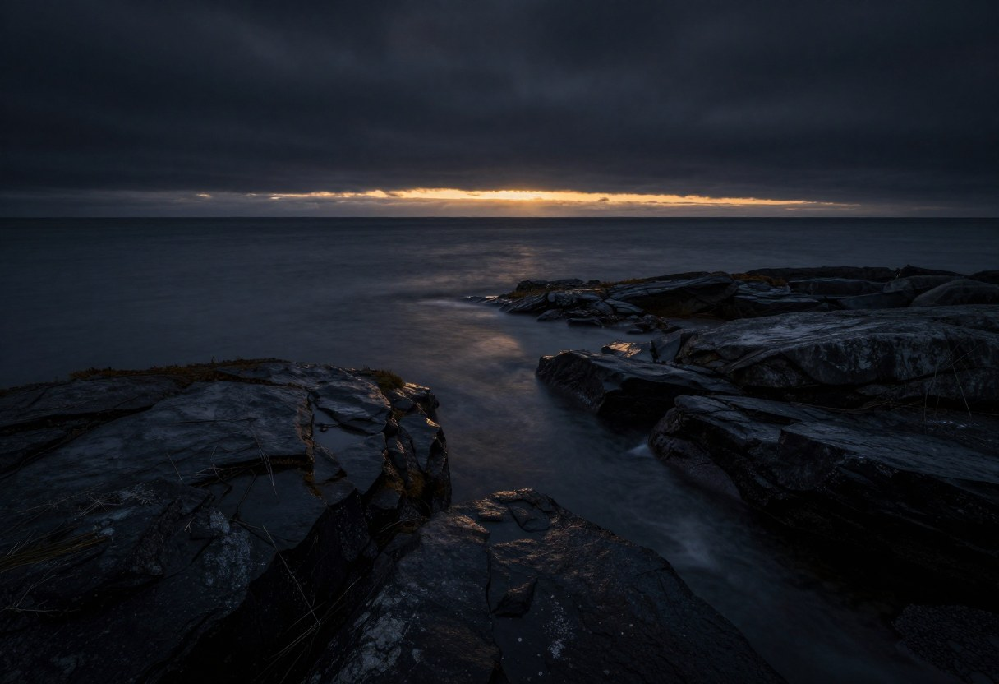
Hvert panel er en bit av det samme kartet. Høydekurvene møtes over kantene, uansett hvilken rekkefølge du setter dem i. Hver modul er oppkalt etter noe i terrenget og merket med høyden til et fjell. Resten finner du ut av på turen.
Every panel is a piece of the same map. The contour lines meet across the edges, whatever order you put them in. Every module is named after something in the terrain and marked with the height of a mountain. The rest you will find out on the way.